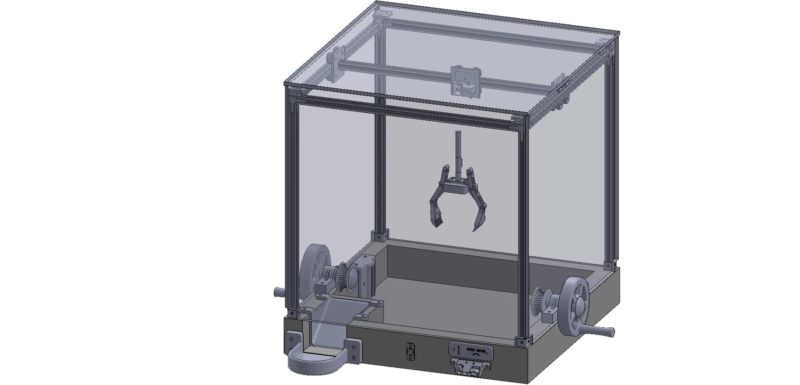
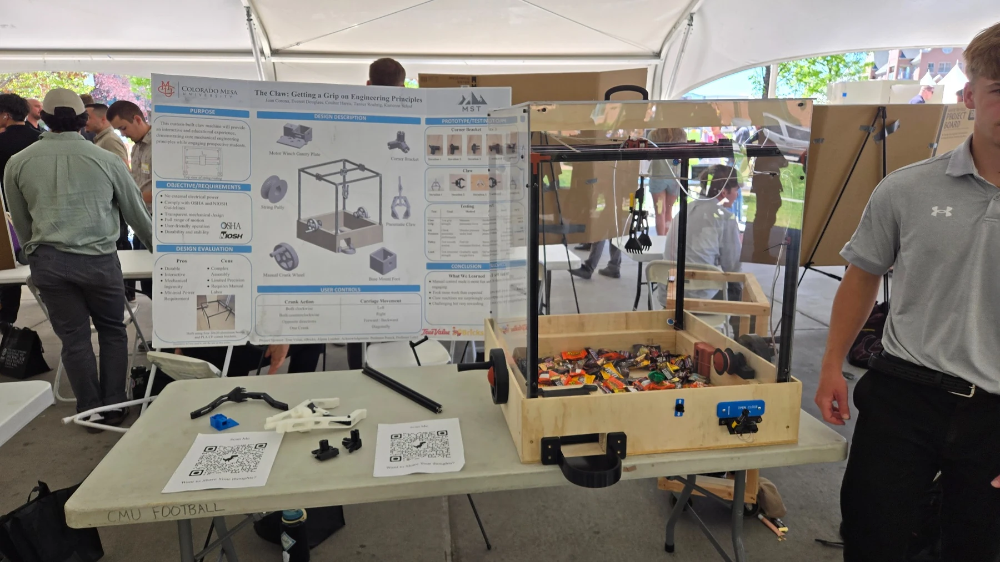

FIRST-YEAR ENGINEERING / JAN-MAY 2025
Two-Player Claw Machine
Proposed the CoreXY-style manual gantry concept for a team-built STEM outreach claw machine. Served as primary mechanical CAD designer, modeling over 30 components and refining the pneumatic claw through physical testing.


Click the image to view at full size.
Make a two-person game from real mechanisms
Developed an interactive claw machine for STEM outreach within a five-person team. Proposed a manual CoreXY-style gantry using two cranks for X-Y positioning, a small motor for vertical travel, and a pneumatic claw for gripping prizes. Design requirements included mechanical interfaces, fabrication, electrical integration, and reproducible setup documentation.
From 3D parts to usable drawings
Personally modeled 30+ mechanical components in SolidWorks, including the claw, crank hardware, mounting brackets, and other interfaces. Produced dimensioned 2D engineering drawings and exported STEP files for teammates responsible for printing. Wrote substantial portions of the project report and prepared technical explanations, parts lists, and troubleshooting content for the team's 70+ page manual.
Reliable gripping took multiple attempts
The pneumatic claw needed to grip prizes consistently without binding or releasing prematurely. Refined geometry, actuation, component fits, and tolerances across more than five iterations, evaluating changes with physical prototypes rather than relying solely on CAD.
A mechanism inside a complete machine
The manual CoreXY-style gantry coordinated two hand cranks through a cable-and-pulley system. Developed the mechanical layout in SolidWorks while teammates completed significant portions of 3D printing, frame construction, electronics, and integration. Addressed pulley alignment and fit issues through joint troubleshooting during assembly and testing.
A finished physical system, not just a render
Presented a working claw machine at the student showcase with the project team. The team's final report documented over 100 operation cycles and a 93% success rate across 30 pneumatic gripping trials. These figures are team-reported results, not independent certification. The build highlighted the importance of functional motion, tolerances, cable routing, and subsystem integration.
PROJECT GALLERY
Model, mechanism, prototype.
Actual CAD views and a photograph of the completed team-built machine.



Documentation matters.
Prepared major portions of the technical writing, component definitions, and troubleshooting guidance in the team's detailed assembly manual. Documentation complemented the CAD drawings and project report to support reproduction and maintenance of the machine.
Explore other projects